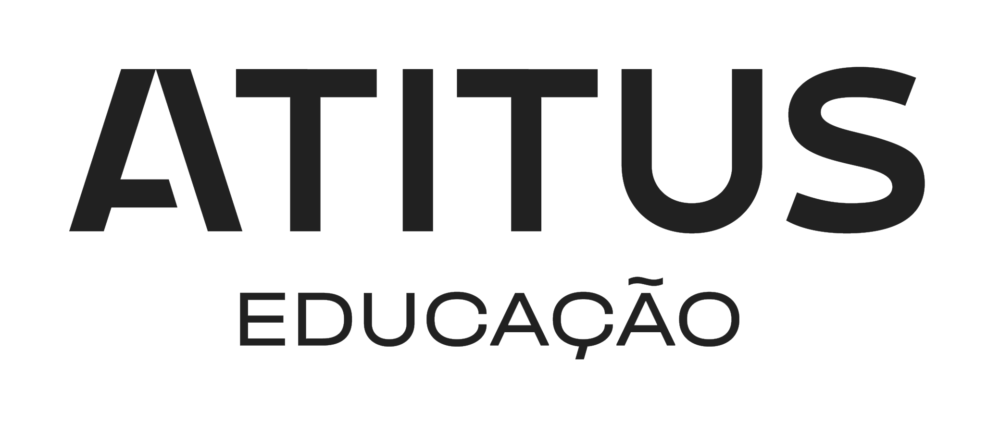

Meu nome é Pedro Henrique Piovezan, tenho 19 anos e sou natural de Tapejara, Rio Grande do Sul,
porém moro na cidade de Ibiaçá desde a infância. Atualmente trabalho na empresa da minha família,
sendo responsável pelo marketing e financeiro. Sempre fui fascinado por tecnologia, por conta disso,
escolhi estudar Ciência da Computação. Além disso, tenho nível avançado de inglês e experiência na área
de informática, onde trabalhei por quase 3 anos.
Atualmente, estudante de Ciência da Computação na ATITUS
Educação, cursando o segundo semestre do curso.
Organização social patrocinada pela Maçonaria, que visa formar bons cidadãos
por meio de princípios filosóficos, fraternais, iniciáticos e filantrópicos.